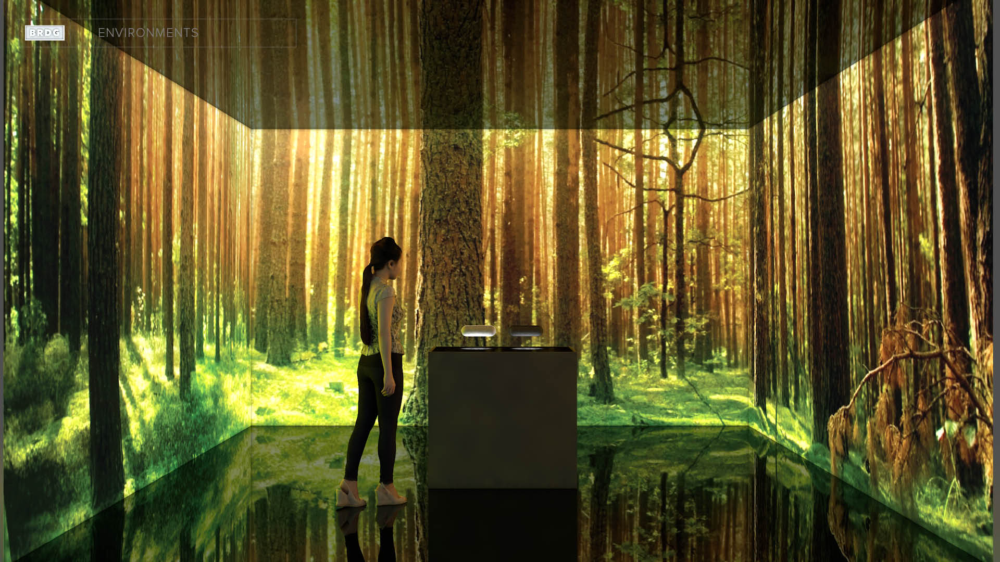
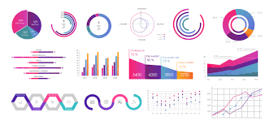
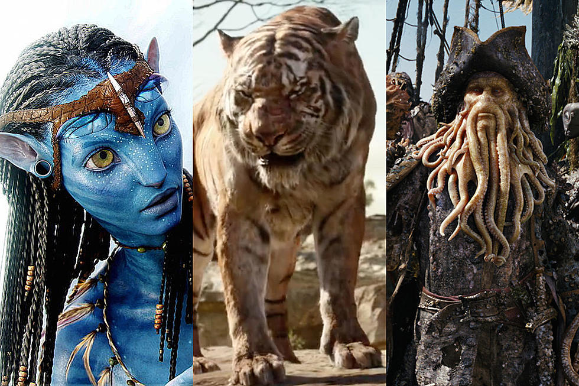
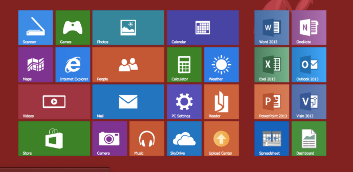
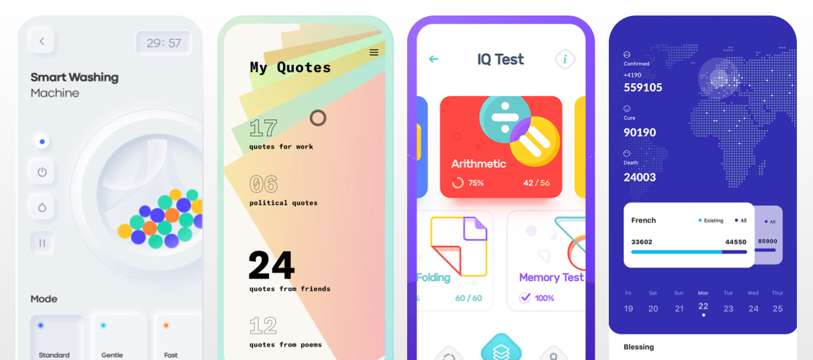

Gráficos y diagramas
Representación gráfica de datos que muestran relaciones entre ellos para formar informes escritos o para presentarlos mediante diapositivas, transparencias o animaciones.
Los gráficos y diagramas se usan comúnmente para realizar resúmenes financieros, estadísticos, matemáticos, científicos, de ingeniería y económicos para realizar informes de investigación, resúmenes de gestión, boletines de información al consumidor y otros tipos de publicaciones.

Procesamiento de imágenes
Es la modificación o interpretación de imágenes existentes, como fotografías. Las técnicas de procesamiento de imágenes se utilizan para mejorar la calidad de un dibujo, analizar las imágenes o reconocer patrones visuales para aplicaciones robotizadas.

Diseño asistido por computadora
Herramientas que se usan en los procesos de arquitectura e ingeniería.
En algunas aplicaciones de diseño, los objetos se visualizan primero en su modelo alámbrico, mostrando su forma general y sus características internas. El modelo alámbrico permite a los diseñadores ver rápidamente los efectos de los ajustes interactivos que se hacen en las formas sin esperar a que la superficie completa de los objetos esté completamente generada.
Entornos de realidad virtual
Entornos en los que el usuario puede interactuar con los objetos en una escena tridimensional.
Dispositivos hardware especializados proporcionan efectos de visión tridimensional y permiten al usuario hacer contacto con los objetos de la escena.

Visualización de datos
Generación de representaciones gráficas de conjuntos de datos o procesos de naturaleza científica, de ingeniería o de medicina.
Se usa para conjuntos de datos relacionados con el comercio, la industria y otras áreas no científicas.

Educación y formación
Los modelos generados por computadora de sistemas físicos, financieros, políticos, sociales, económicos y otros se usan frecuentemente como ayudas para la educación.
Ejemplos de este tipo de sistemas son los simuladores para las sesiones prácticas de formación de capitanes de barco, pilotos de aeronaves, operadores de maquinaria pesada, personal de control de tráfico aéreo, etc.
Arte por computadora
Tanto el arte puro como el comercial hacen uso de los métodos de los gráficos por computadora.
Los artistas tienen disponibles una variedad de métodos y herramientas así como software de escritorio para publicación y sistemas de animación que proporcionan capacidades para diseñar formas de objetos y especificar sus movimientos.

Entretenimiento
Las producciones de televisión, las películas de cine, los vídeos musicales y los videojuegos usan de manera rutinaria los gráficos por computadora.
Algunas veces estas imágenes se combinan con actores reales y escenas filmadas, o también se usan los gráficos por computadora para generar edificios, rasgos del terreno u otros fondos de escenas.
 
Interfaces gráficas de usuario
Hoy día es muy común que las aplicaciones software se proporcionen con interfaces gráficas de usuario.
Un componente principal en una interfaz gráfica es un gestor de ventanas que permita al usuario visualizar múltiples áreas rectangulares de la pantalla, llamadas ventanas de visualización.
Cada área de visualización en la pantalla contiene un proceso diferente, mostrando información gráfica o de otro tipo.
 